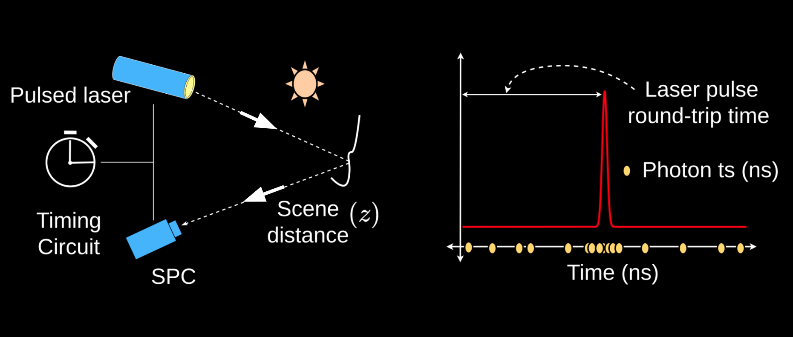
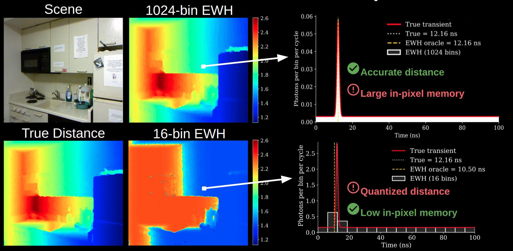
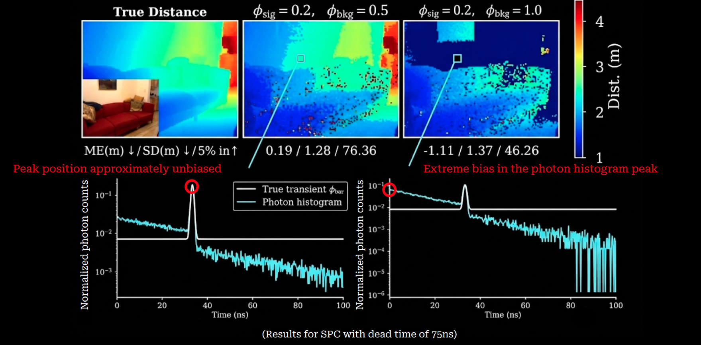
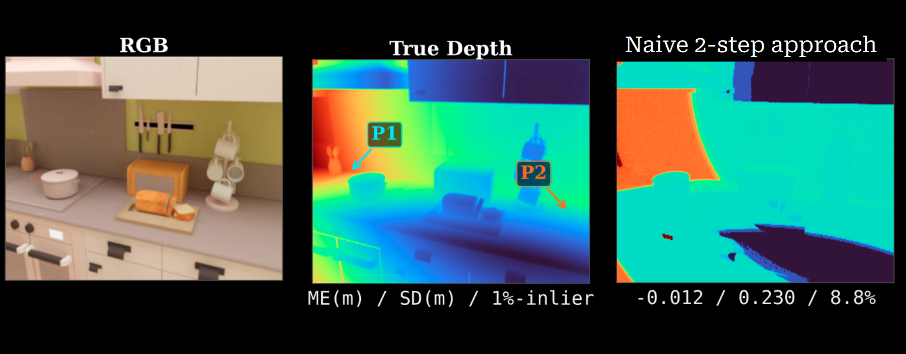
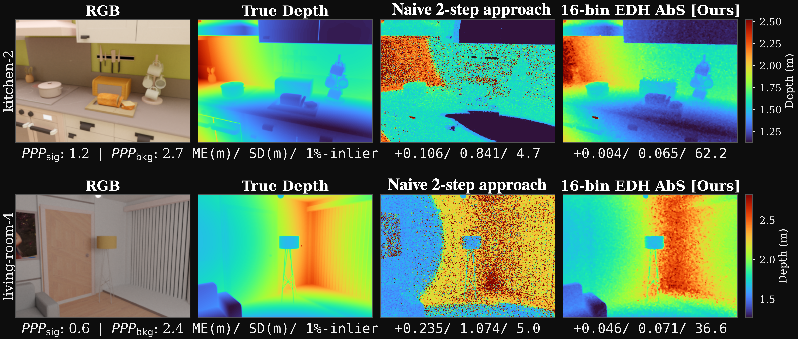

High-Flux Count-Free
Single-Photon 3D Cameras
Abstract
Single-photon cameras based on single-photon avalanche diode (SPAD) technology are gaining popularity for 3D sensing, thanks to their extreme sensitivity and time resolution. There are two key challenges with single-photon cameras that limit their widespread use: (i) they suffer from non-linear distortions called ``pile-up'' when operated in high-photon-flux conditions, and (ii) they generate a large volume of raw photon data, creating a severe data bottleneck at each sensor pixel. In this work, we show that while compressive capture techniques successfully mitigate data transfer challenges, they exacerbate the effects of dead-time distortion because they fail to retain sufficient information about the photon detection history to allow post-processing pile-up correction via existing methods. We propose a new computational-imaging method that combines free-running capture with an analysis-by-synthesis software pipeline to mitigate pile-up distortions. Our results with hardware emulations and full-scene and single-pixel simulations show that our method can reliably capture scene distance and reflectance over a wide range of illumination conditions. Our work will enable high-resolution SPAD cameras that are severely bandwidth-constrained to operate in real-world high-flux scenarios.
What are 3D single-photon cameras (SPCs)?

SPCs use the time-of-flight principle to estimate the scene distance by measuring the round-trip time of the laser pulse to and from the scene. They capture the photon timestamps of the returning photons and the peak of the timestamp distribution gives us the time of flight and thus the scene distance.
Current limitations of conventional SPCs: Massive raw data rates and dead-time distortion in high-photon-flux conditions

Limitation 1: extreme data rate requirement. Conventional SPCs capture equi-width histograms of the photon timestamp data. They require 500 to 1000 histogram bins per pixel for practical accuracy and distance range. In case of limited resources per pixel, reducing the histogram bins leads to heavy quantization. So, conventional SPCs suffer a strict tradeoff between the resource requirements and the measurement accuracy.

Limitation 2: dead-time distortion in high-flux scenarios. Due to an intrinsic property of SPADs called the dead-time, operating SPCs in high-flux conditions such as bright sunlight causes a mismatch between the distribution of photons arriving at the SPCs shown here in white color and the distribution of photons detected by the SPC. Operating in case of higher background flux (right) renders a lot of pixels useless because the peak of photon detections is no longer close to the actual peak that we want to estimate.
Need for a joint solution

Existing methods only address one of the two limitations. To enable accurate and high-resolution SPCs as mainstream 3D sensors we need to jointly address the data rate problem and compensate for the dead-time distortion. If we combine existing techniques in a naive two step approach where we capture compressed measurements with just a few histogram bins and then apply existing compensation techniques we fail to recover accurate depth due to heavy quantization.
Our hardware-algorithm co-design addresses both the limitations jointly

Our hardware-algorithm co-design can recover accurate scene distances from highly distorted, low-memory EDH measurements. On the hardware side we capture a more efficient representation of photon timestamp data and on the algorithm side we propose a robust reconstruction pipeline to estimate accurate scene distance from the dead-time distorted equi-depth histogram measurements. Notice how our method significantly outperforms the naive two step approach used by conventional SPCs.
Video Presentation
Poster
Citation
@misc{sadekar2026highfluxcountfreesinglephoton3d,
title={High-Flux Count-Free Single-Photon 3D Cameras},
author={Kaustubh Sadekar and Vivek K Goyal and David Maier and Atul Ingle},
year={2026},
eprint={2608.18306},
archivePrefix={arXiv},
primaryClass={cs.CV},
url={https://arxiv.org/abs/2608.18306},
}Acknowledgements
This work was supported in part by NSF ECCS 2138471 and the Portland State University Venture Development Fund. We thank Keylan Petty for assistance with initial exploratory simulations on the effect of dead-time on ED histogrammers.